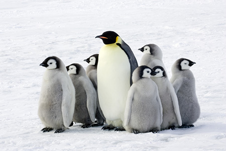

<p>Charlotte Byrdy</p>
  
<style>
  .penguins {
    -webkit-filter: sepia(60%);
    filter: sepia(60%);
    border-radius: 50%;  
    border: 1px solid black;
    object-fit: cover;
    width: 300px;              
    height: 200px;
    display: inline-block;
    overflow: hidden;
  }
</style>
 
  
<style>
  .football {
    -webkit-filter: grayscale(100%);
    filter: grayscale(100%);
    border: 50px solid #000;
    border-image: url(img/ttt.png) 50 round;
  }
</style>

  
<style>
  .dinosaur {
    -webkit-filter: hue-rotate(128deg);
    filter: hue-rotate(128deg);
    -webkit-filter: drop-shadow(-5px -5px 5p #000000);
    filter: drop-shadow(-5px -5px 5px #000000);
  }
</style>


